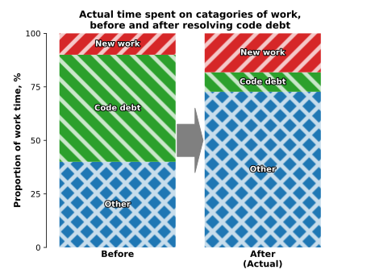
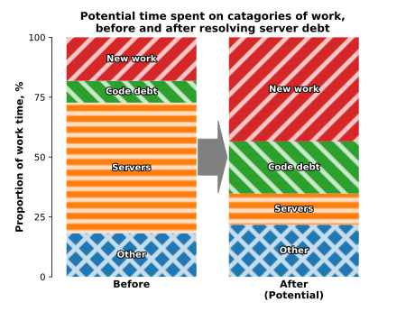

Fixed tech debt, not dev experience
Increased productivity, didn't make us happy
We were spending the same amount of time on new work and other sources of technical debt as before, so even though work was completed in half the time, just over 80% of our time was still fighting technical debt. This was not enough to meaningfully improve the developer experience.
Improving the technical situation
For my team, new features took a long time and developers didn't stay beyond a year. This was largely due to spending 90% of our time fighting technical debt. About half was battling the code base; figuring out complicated code, where new code should go, fixing daily crashes, manually resuming runs - nearly all runs failed.
We fixed one chunk of code as a proof of concept and projected a full fix would take 3 months and free up half our time. We'd get faster feature development, the work paying for itself in 6 months, and work would be more rewarding.
Two months later, we started; first added automated testing, bought in appropriate libraries, git, gitflow, CI/CD, consistent naming and code review. We deleted, rewrote, refactored and deduplicated code, increased test coverage and added automatic resume points, mitigating the remaining crashes.
In slightly under the projected 3 months, we were done.
Development time increased, but developers were still unhappy?
It worked - features were released rapidly on a regular schedule and the service was more reliable. The code was also 20% faster, a free benefit. Everyone outside the team was pleased. The team was, at first, more focused and felt more productive.
But this faded - we were now spending most of our time fighting with the servers; looking for what had caused the crashes, managing that, relaunching the runs. We had fixed the code base, where had that time gone? Why were we now mostly fighting servers, even though our productivity was boosted?
The time to complete new work was the same
We naively expected the time we spent on code tech debt to be replaced with time on new features. I've visualised this expectation below, new work replacing code debt work.
In reality the time spent on code debt was reduced, the time on all other tasks remained the same - the majority of time now spent managing the other sources of technical debt.
The graph below represents the proportion of time spent working on each type of task before and after the fix - each other area of work expanding to fill the space left by removed tech debt.

We did have a large increase in the amount of new work - almost double, 10% to 18%. But still a small minority - we didn't notice the improvement.
The next biggest problem was the company server farm. The software was rarely updated, each server running different versions. It used an unsupported distributed compute platform. Two of the servers had flakey hardware and would crash. People would log onto the servers and run code, causing crashes and unexpected changes.
So what would we spend our time on if we fixed 90% of the server problems?

Approaching half of our time would then be doing new work. To get to 80%, we'd need to reduce the remaining code debt, tackle the servers again and fix other problems - including external dependencies.
We couldn't fix it
In the end, we didn't fix these problems. The team was no longer a bottleneck, the commercial case wasn't there - it would have taken months to fix the servers. These were also shared problems, the servers and the external dependencies, and other teams didn't agree these were problems!
To solve technical problems, our team would have to dedicate perhaps a year to them - too much perhaps to ask from a company.
For the company, we successfully fixed the bottleneck, but it wasn't enough to improve the experience of working on the system - team members kept moving on!
Avoid the situation, the fix may be too hard
Tackling enough technical debt to improve developer experience can take much longer than gaining commercial benefits - happy commercial stakeholders, unhappy techies.
It's important to focus on quality, addressing pain points early - recovery from poor quality systems will take a long time, it's more straight forward to avoid it entirely!